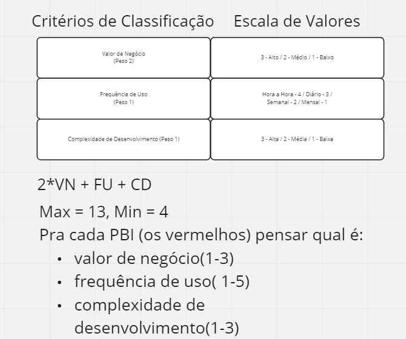
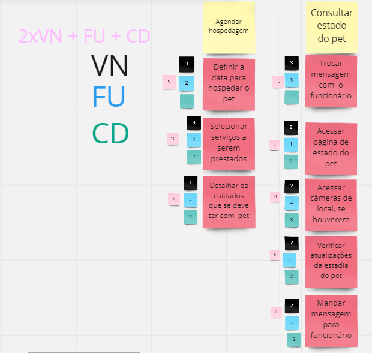
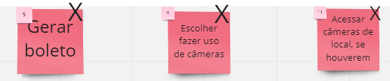
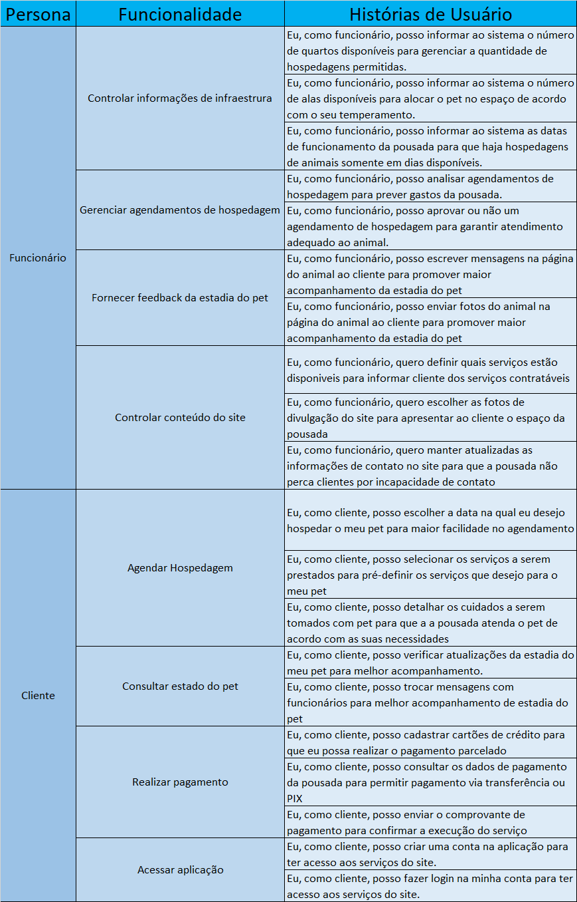
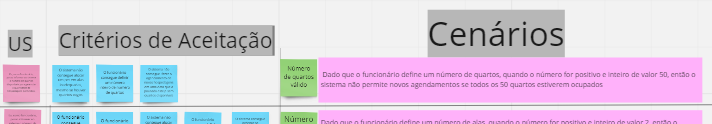

PBB - Product Backlog Building
Histórico de revisão
| Data | Autor | Modificações | Versão |
|---|---|---|---|
| 17/03/2022 | Luís Lins, Lais Portela, Kathlyn Lara | Adiciona primeira versão do PBB, histórias de usuário e BDD | 1.0 |
PBB
Acompanhe a explicação pelo Miro
Primeira versão
- Definição dos problemas
- Definição das expectativas
- Definição das personas
- Definição das funcionalidades
- Definição dos PBIs
Segunda versão
Priorização dos PBIs
Os PBIs foram priorizados de acordo com 3 critérios: * Valor de negócio * Frequência de Uso * Complexidade
A escala de valores e a fórmula para o valor final constam na imagem abaixo:

A priorização dos PBIs teve como resultado:

Veja mais pelo Miro
PBB Canvas
Para visualizar a versão priorizada do PBB Canvas, observar a diagrama com o seguinte título:
Observe que foram despriorizadas 3 PBIs:

Histórias de Usuário

Critérios de Aceitação


BDD - Behavior Driven Development
Para visualizar o BDD completo, observar o diagrama com a seguinte aparência no Miro
